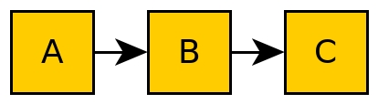
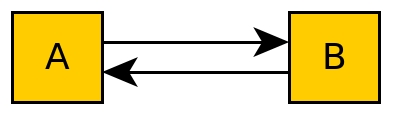

==: exact match
!=: exclusion
<=,>=: inclusive ordered
<,>: exclusive orderedDependency Management
Who am I?
Outline
Introduction dependency management
Docker development environment
Visual Studio Code
Python
PIP, virtenv, setup.py, wheels
Conan.io
install, create, remotes
Introduction
Dependency management is a technique for declaring, resolving and using dependencies required by the project in an automated fashion.
(Source: Devopedia)
Package vs Dependency
Package manager: Install applications, libraries and tools on a system
apt (Linux)
brew (MacOS)
Dependency manager: Handle project dependencies across environments
pip, conda (Python)
conan (C++)
What is a dependency
Module A uses functionality of module B
Transitive dependency → Dependency graph
Circular dependency

Version specifier
Comparison
Compatibility
~= 1.4.5 >= 1.4.5, == 1.4.*Combination
~=3.1.0, != 3.1.3: version 3.1.0 or later, but not version 3.1.3 and not version 3.2.0 or later
Docker Development Environment
Fast
Portable
Reproducible
Uniform
Traceable
Modular
Docker Development Environment

Visual Studio Code
PIP
Find, install and publish Python packages: https://pypi.org
Most dependencies are project related.
Use a virtual environment and a list of requirements to organize your dependencies.
Identify dependency relationship
pip show
pipdeptree
Why is a package
Exercise 1: Using pip
Install TensorFlow in virtualenv
Python packaging
setup.py
import setuptools
with open("README.md", "r") as fh:
long_description = fh.read()
setuptools.setup(
name="example-pkg-your-username",
version="0.0.1",
author="Example Author",
author_email="author@example.com",
description="A small example package",
long_description=long_description,
long_description_content_type="text/markdown",
url="https://github.com/pypa/sampleproject",
packages=setuptools.find_packages(),
classifiers=[
"Programming Language :: Python :: 3",
"License :: OSI Approved :: MIT License",
"Operating System :: OS Independent",
],
)Python Wheels
Only runtime requirements and not the build-time requirements are needed
C++ dependency management with conan.io
Conan repositories
conan-center: Official maintained by the Conan team (178 packages)
bincrafters: Group of OSS developers (370 packages)
braintwister: Personal repository at Bintray for OSS
Running conan_server for on-site repository
Installing dependencies
conanfile.txt
[requires]
Poco/1.9.0@pocoproject/stable
[generators]
cmakename / version @ user / channel
Creating package
conanfile.py
from conans import ConanFile, CMake
class HelloConan(ConanFile):
name = "Hello"
version = "0.1"
license = "<Put the package license here>"
url = "<Package recipe repository url>"
description = "<Description of Hello here>"
settings = "os", "compiler", "build_type", "arch"
options = {"shared": [True, False]}
default_options = {"shared": False}
generators = "cmake"
def source(self):
self.run("git clone https://github.com/memsharded/hello.git")
self.run("cd hello")
def build(self):
cmake = CMake(self)
cmake.configure(source_folder="hello")
cmake.build()
def package(self):
self.copy("*.h", dst="include", src="hello")
self.copy("*.so", dst="lib", keep_path=False)
def package_info(self):
self.cpp_info.libs = ["hello"]